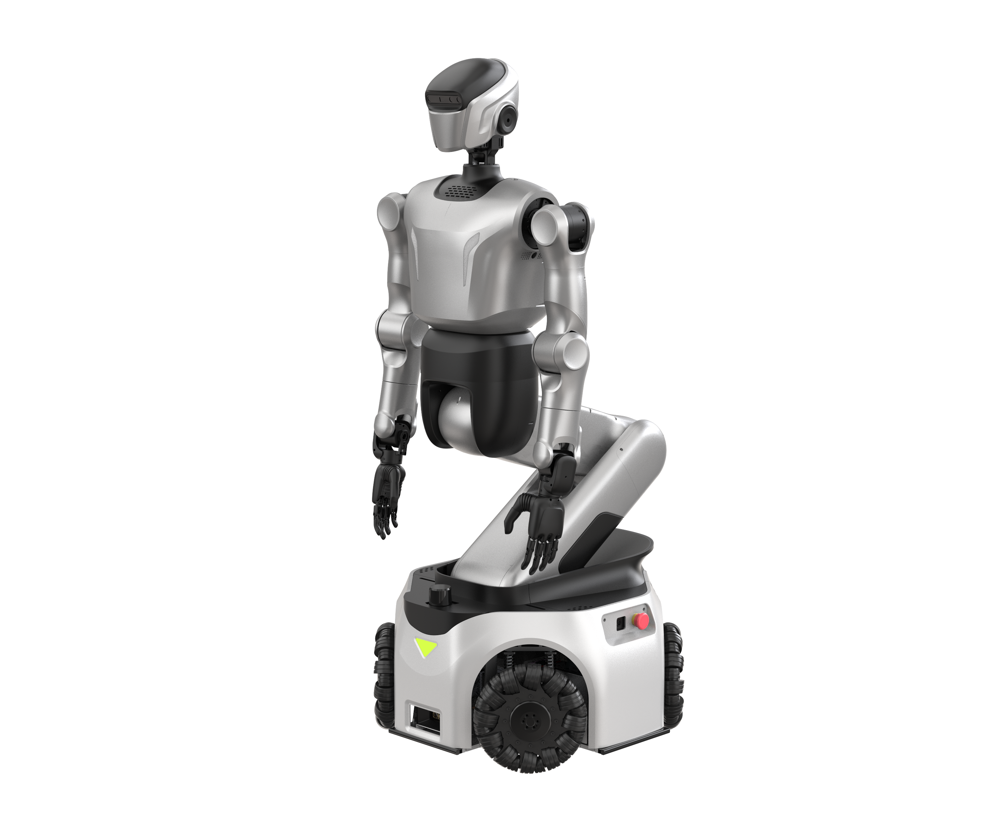

KUAVO 5-WMaxB（触觉灵巧手）
乐聚 · 轮式人形 · 已发布
乐聚轮式双臂平台的具体手册配置。进阶版、MaxA 和 MaxB 末端及算力分开；36 自由度包含灵巧手、折叠臂和底盘，不与不含末端的本体自由度直接比较。文档存在不代表已核实交期。图片为 MaxA/MaxB 官方手册共用的灵巧手轮臂示意，不用于辨认触觉或精确交付标配。

完整规格与依据
身体规格
- 身高
- 210 cm 已核对原文 · 厂商资料
手册高度 2.1 m 换算；未说明最小/最大升降高度或测量姿态
本项资料核验 2026-10-24 - 整机重量
- 200 kg 已核对原文 · 厂商资料
手册重量；未单列电池与不同末端的包含口径
本项资料核验 2026-10-24 - 自由度
- 36 DoF 已核对原文 · 厂商资料
手册整机总数，含双手各 6、头部 2、双臂各 7、腰部 1、折叠臂 4、底盘 3；不与不含末端的本体 DoF 直接比较
本项资料核验 2026-10-24 - 末端执行器
- 单手 6 自由度触觉灵巧手 已核对原文 · 厂商资料
对应配置产品组成栏明确标配；不将 MaxB 触觉能力赋给普通 MaxA
本项资料核验 2026-10-24
运动与操作
- 操作负载
- 待核实
【待继续采集】KUAVO 5-W MaxB（触觉灵巧手）的操作负载尚未完成专项深挖。所链仅为产品入口，不是该参数未公开的证明；后续须核对该代手册/配置表或报价，不能从其他代际或零值补齐。
专项核验尚未完成；相关链接不表示厂商从未披露。 - 移动速度
- 1.5 m/s 已核对原文 · 厂商资料
轮式底盘行走速度 5.4 km/h 除以 3.6；全向行走，不是双足速度
本项资料核验 2026-10-24
电池与工作
- 工作时间
- 待核实
【既有资料限制】手册未给可归属此配置的单次工作时间，自动充电/手动换电能力不代替续航数字
本项资料核验 2026-10-24；相关链接不表示厂商从未披露。 - 电池能量
- 待核实
【既有资料限制】多电池容量及电压范围不支持唯一整机可用 Wh；本次不反算或合并
本项资料核验 2026-10-24；相关链接不表示厂商从未披露。 - 电池容量
- 待核实
【既有资料限制】原文 ≥48 V、60 Ah+6 Ah；多电池组合方式与总可用容量未说明，不简单加总成 66000 mAh
本项资料核验 2026-10-24；相关链接不表示厂商从未披露。
感知与开发
- 感知配置
- 头部 Gemini-335L；腕部 D405×2；Mid-360；6 麦克风；IMU 已核对原文 · 厂商资料
按各配置手册核对；进阶版不继承 MaxA/MaxB 腕部相机
本项资料核验 2026-10-24 - 计算平台
- GENE-MTH6；AGX Orin 已核对原文 · 厂商资料
各配置手册上下位机；AGX Orin 内存有选项，不统一当作最高规格标配
本项资料核验 2026-10-24 - 二次开发
- 待核实
【待继续采集】KUAVO 5-W MaxB（触觉灵巧手）的二次开发尚未完成专项深挖。所链仅为产品入口，不是该参数未公开的证明；后续须核对该代手册/配置表或报价，不能从其他代际或零值补齐。
专项核验尚未完成；相关链接不表示厂商从未披露。
采购信息
- 美元报价
- 待核实
【待继续采集】KUAVO 5-W MaxB（触觉灵巧手）的美元报价尚未完成专项深挖。所链仅为产品入口，不是该参数未公开的证明；后续须核对该代手册/配置表或报价，不能从其他代际或零值补齐。
专项核验尚未完成；相关链接不表示厂商从未披露。 - 人民币报价
- 待核实
【待继续采集】KUAVO 5-W MaxB（触觉灵巧手）的人民币报价尚未完成专项深挖。所链仅为产品入口，不是该参数未公开的证明；后续须核对该代手册/配置表或报价，不能从其他代际或零值补齐。
专项核验尚未完成；相关链接不表示厂商从未披露。
同型号的其他配置 / 代际
- KUAVO 5-W 进阶版（二指爪）乐聚 · 轮式人形
- KUAVO 5-W MaxA（灵巧手）乐聚 · 轮式人形